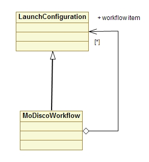
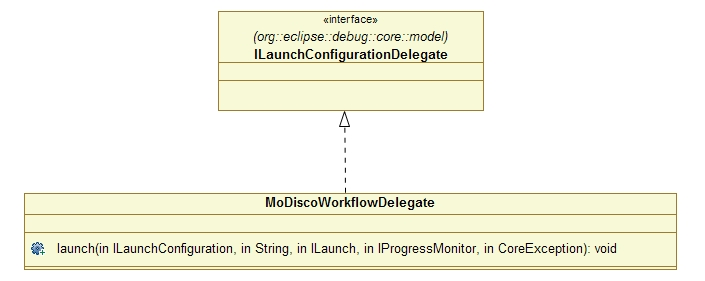
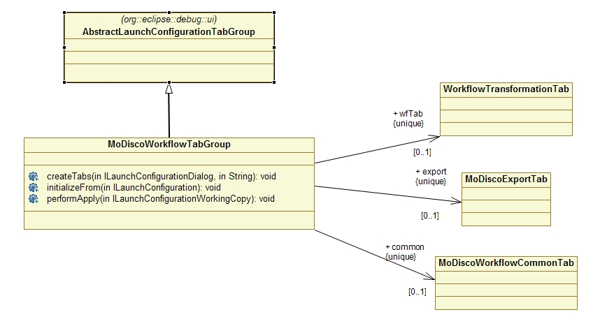
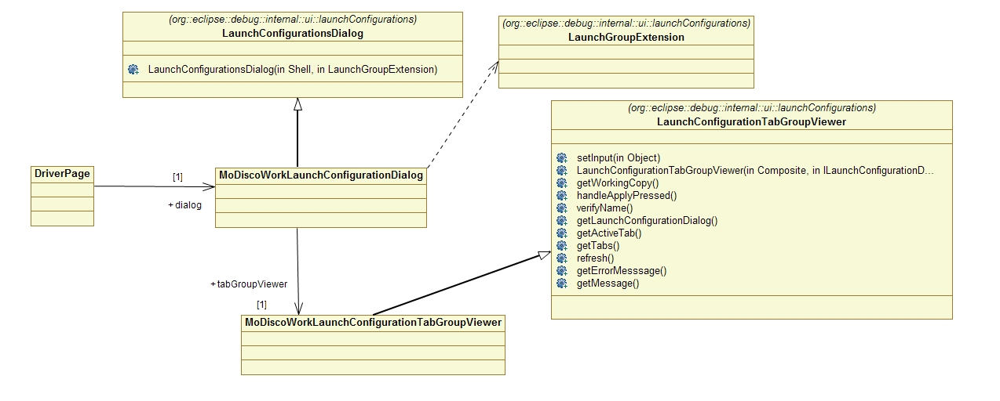

A launch configuration is a description of how to launch a program. A workflow could be viewed as a composition of launch configurations.

To be able to propose an interface for a workflow definition dedicated to modernization (strong use of modeling tools), we have extended the notion of launch configuration following a composite pattern: notion of leaf for launch configurations and notion of composite for launch configuration. Extending the mechanism of launch configuration will provide us a nice wizard with all the options. Especially, if the MoDiscoWorkflow is itself a type of launch configuration.
However we had some requirements to be able to implement such workflow mechanism:
The first step was to add the MoDiscoWorkflow as a launch configuration. So we followed the eclipse help and provided two classes (one for the type and one for the tab group).
 
The second step was to retrieve the list of existing launch configurations. So we created a dedicated wizard and get the list of existing launch configuration from an instance of org.eclipse.debug.core.ILaunchManager. Instance provided by static access DebugPlugin.getDefault().getLaunchManager(). Using this API, we were able to retrieve an array of ILaunchConfiguration which prodides us enough informations (type, name).
The third step was to modify, directly from the workflow definition, a loaded launch configuration. Instead of creating a specific wizard for each type of launch configuration, we would would like to reuse existing tab group defined for the type of selected launch configuration. So in our simple wizard, we have a wizard page which should be able to contain the same component that have been used in main list of launch configurations. However to do that we had to link two classes that shouldn't be accessed:

The fourth step was to create, directly from the workflow definition, a launch configuration. Difficulty was to add it in the main list of launch configurations, but the links made in the third step were enough to reach this goal.